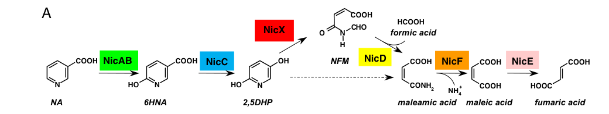
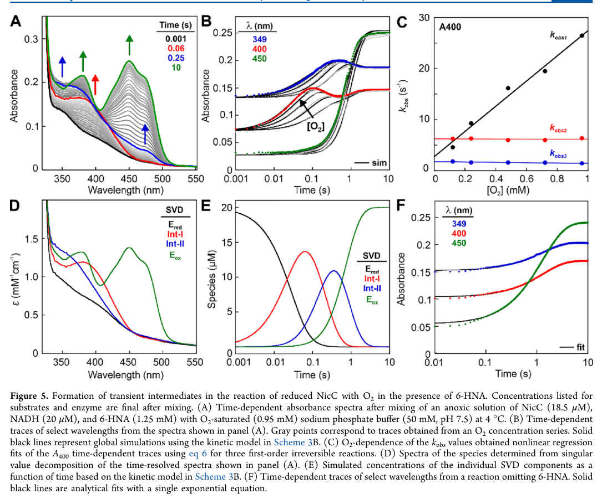

nicC encodes 6-hydroxynicotinate 3-monooxygenase, a flavin-dependent monooxygenase in the aerobic nicotinate degradation pathway. It converts 6-hydroxynicotinate to 2,5-dihydroxypyridine with NADH and oxygen, following the NicAB nicotinate hydroxylation step.
| GO Term | Evidence | Action | Reason |
|---|---|---|---|
|
GO:0004497
monooxygenase activity
|
IEA
GO_REF:0000120 |
MARK AS OVER ANNOTATED |
Summary: Monooxygenase activity is correct but too broad when the specific 6-hydroxynicotinate 3-monooxygenase term is present.
Reason: Use GO:0043731 as the informative annotation.
Supporting Evidence:
file:PSEPK/nicC/nicC-uniprot.txt
Flavin-dependent monooxygenase (FMO) that catalyzes the
file:PSEPK/nicC/nicC-deep-research-falcon.md
is a **single-component class A FAD-dependent monooxygenase** that catalyzes a **decarboxylative hydroxylation** of the pyridine ring of **6-hydroxynicotinic acid (6-HNA)** to form **2,5-dihydroxypyridine (2,5-DHP)**, coupled to oxidation of **NADH → NAD+** and requiring **O2**.
|
|
GO:0043731
6-hydroxynicotinate 3-monooxygenase activity
|
IEA
GO_REF:0000120 |
ACCEPT |
Summary: This is the precise catalytic activity of NicC and should be retained as the core molecular function.
Reason: The activity is directly supported by enzyme name, EC assignment, reaction, and biochemical characterization.
Supporting Evidence:
file:PSEPK/nicC/nicC-uniprot.txt
RecName: Full=6-hydroxynicotinate 3-monooxygenase
file:PSEPK/nicC/nicC-uniprot.txt
Reaction=6-hydroxynicotinate + NADH + O2 + 2 H(+) = 2,5-
file:PSEPK/nicC/nicC-deep-research-falcon.md
is a **single-component class A FAD-dependent monooxygenase** that catalyzes a **decarboxylative hydroxylation** of the pyridine ring of **6-hydroxynicotinic acid (6-HNA)** to form **2,5-dihydroxypyridine (2,5-DHP)**, coupled to oxidation of **NADH → NAD+** and requiring **O2**.
|
|
GO:0071949
FAD binding
|
IEA
GO_REF:0000002 |
KEEP AS NON CORE |
Summary: FAD binding is an experimentally supported cofactor property of NicC.
Reason: Retain as non-core cofactor binding.
Supporting Evidence:
file:PSEPK/nicC/nicC-uniprot.txt
Name=FAD; Xref=ChEBI:CHEBI:57692;
file:PSEPK/nicC/nicC-deep-research-falcon.md
FAD is required (flavin monooxygenase class A). In KT2440-based biochemical assays, NicC activity in extracts required addition of **NADH and FAD**, consistent with a flavoprotein monooxygenase requiring bound flavin and NADH-driven reduction.
|
|
GO:1901848
nicotinate catabolic process
|
IEA
GO_REF:0000117 |
ACCEPT |
Summary: NicC directly catalyzes a step in aerobic nicotinate degradation.
Reason: Retain the pathway annotation.
Supporting Evidence:
file:PSEPK/nicC/nicC-uniprot.txt
step in the aerobic nicotinate degradation pathway.
file:PSEPK/nicC/nicC-uniprot.txt
PATHWAY: Cofactor degradation; nicotinate degradation.
file:PSEPK/nicC/nicC-deep-research-falcon.md
NicC catalyzes the **second oxidative step** (6-HNA → 2,5-DHP), upstream of the Fe(II)-dependent dioxygenase NicX that performs ring cleavage of 2,5-DHP.
file:PSEPK/nicC/nicC-deep-research-falcon.md
In KT2440, disruption of **nicC** abolishes growth on NA as a sole carbon source (and blocks catabolism beyond 6-HNA), showing NicC is essential to flux through the pathway.
|
|
GO:0043731
6-hydroxynicotinate 3-monooxygenase activity
|
EXP
PMID:27218267 Structural and Biochemical Characterization of 6-Hydroxynico... |
ACCEPT |
Summary: This is the precise catalytic activity of NicC and should be retained as the core molecular function.
Reason: The activity is directly supported by enzyme name, EC assignment, reaction, and biochemical characterization.
Supporting Evidence:
file:PSEPK/nicC/nicC-uniprot.txt
RecName: Full=6-hydroxynicotinate 3-monooxygenase
file:PSEPK/nicC/nicC-uniprot.txt
Reaction=6-hydroxynicotinate + NADH + O2 + 2 H(+) = 2,5-
file:PSEPK/nicC/nicC-deep-research-falcon.md
is a **single-component class A FAD-dependent monooxygenase** that catalyzes a **decarboxylative hydroxylation** of the pyridine ring of **6-hydroxynicotinic acid (6-HNA)** to form **2,5-dihydroxypyridine (2,5-DHP)**, coupled to oxidation of **NADH → NAD+** and requiring **O2**.
|
|
GO:1901848
nicotinate catabolic process
|
IDA
PMID:18678916 Deciphering the genetic determinants for aerobic nicotinic a... |
ACCEPT |
Summary: NicC directly catalyzes a step in aerobic nicotinate degradation.
Reason: Retain the pathway annotation.
Supporting Evidence:
file:PSEPK/nicC/nicC-uniprot.txt
step in the aerobic nicotinate degradation pathway.
file:PSEPK/nicC/nicC-uniprot.txt
PATHWAY: Cofactor degradation; nicotinate degradation.
file:PSEPK/nicC/nicC-deep-research-falcon.md
NicC catalyzes the **second oxidative step** (6-HNA → 2,5-DHP), upstream of the Fe(II)-dependent dioxygenase NicX that performs ring cleavage of 2,5-DHP.
file:PSEPK/nicC/nicC-deep-research-falcon.md
In KT2440, disruption of **nicC** abolishes growth on NA as a sole carbon source (and blocks catabolism beyond 6-HNA), showing NicC is essential to flux through the pathway.
|
|
GO:0004497
monooxygenase activity
|
IDA
PMID:18678916 Deciphering the genetic determinants for aerobic nicotinic a... |
MARK AS OVER ANNOTATED |
Summary: Monooxygenase activity is correct but too broad when the specific 6-hydroxynicotinate 3-monooxygenase term is present.
Reason: Use GO:0043731 as the informative annotation.
Supporting Evidence:
file:PSEPK/nicC/nicC-uniprot.txt
Flavin-dependent monooxygenase (FMO) that catalyzes the
file:PSEPK/nicC/nicC-deep-research-falcon.md
is a **single-component class A FAD-dependent monooxygenase** that catalyzes a **decarboxylative hydroxylation** of the pyridine ring of **6-hydroxynicotinic acid (6-HNA)** to form **2,5-dihydroxypyridine (2,5-DHP)**, coupled to oxidation of **NADH → NAD+** and requiring **O2**.
|
Q: Is NicC activity limited to 6-hydroxynicotinate in vivo, or can related pyridine substrates contribute to KT2440 nicotinate-pathway flux?
Suggested experts: Flavin monooxygenase and nicotinate catabolism experts
Experiment: Measure purified NicC activity against 6-hydroxynicotinate and related pyridine substrates, and compare metabolite accumulation in wild type and nicC deletion strains grown on nicotinate.
Type: substrate panel enzyme assay with pathway metabolomics
The research report should be a detailed narrative explaining the function, biological processes, and localization of the gene product. Citations should be given for all claims.
You should prioritize authoritative reviews and primary scientific literature when conducting research. You can supplement
this with annotations you find in gene/protein databases, but these can be outdated or inaccurate.
We are specifically interested in the primary function of the gene - for enzymes, what reaction is catalyzed, and what is the substrate specificity? For transporters, what is the substrate? For structural proteins or adapters, what is the broader structural role? For signaling molecules, what is the role in the pathway.
We are interested in where in or outside the cell the gene product carries out its function.
We are also interested in the signaling or biochemical pathways in which the gene functions. We are less interested in broad pleiotropic effects, except where these elucidate the precise role.
Include evidence where possible. We are interested in both experimental evidence as well as inference from structure, evolution, or bioinformatic analysis. Precise studies should be prioritized over high-throughput, where available.
The UniProt entry Q88FY2 specifies Pseudomonas putida KT2440 nicC encoding 6-hydroxynicotinate (6-hydroxynicotinic acid; 6-HNA) 3-monooxygenase, a flavin-dependent monooxygenase in aerobic nicotinic acid (NA) degradation. This identity is directly supported by genetic and biochemical characterization of the KT2440 nic cluster, which assigns nicC to the enzymatic step converting 6-HNA → 2,5-dihydroxypyridine (2,5-DHP); a ΔnicC mutant accumulates 6-HNA and cannot proceed further, while heterologous expression yields an active ~42 kDa enzyme requiring NADH and FAD in extracts. (jimenez2008decipheringthegenetic pages 3-4)
NicC (6-hydroxynicotinate 3-monooxygenase; EC 1.14.13.114) is a single-component class A FAD-dependent monooxygenase that catalyzes a decarboxylative hydroxylation of the pyridine ring of 6-hydroxynicotinic acid (6-HNA) to form 2,5-dihydroxypyridine (2,5-DHP), coupled to oxidation of NADH → NAD+ and requiring O2. (perkins2023mechanismofthe pages 1-2, nakamoto2019mechanismof6hydroxynicotinate pages 1-2)
In P. putida KT2440 specifically, NicC is the pathway enzyme responsible for transforming 6-HNA to 2,5-DHP during aerobic NA catabolism. (jimenez2008decipheringthegenetic pages 3-4)
In KT2440, NA is degraded aerobically through a gene cluster encoding enzymes that convert NA via 6-HNA and 2,5-DHP to ring-cleavage products that are further hydrolyzed/isomerized to fumarate, connecting the pathway to central metabolism. The pathway sequence in the canonical KT2440 “nic” cluster is:
NA → 6-HNA → 2,5-DHP → N-formylmaleamate → maleamate → maleate → fumarate. (jimenez2008decipheringthegenetic pages 1-2, jimenez2008decipheringthegenetic media c3646f9b)
NicC catalyzes the second oxidative step (6-HNA → 2,5-DHP), upstream of the Fe(II)-dependent dioxygenase NicX that performs ring cleavage of 2,5-DHP. (jimenez2008decipheringthegenetic pages 1-2, jimenez2008decipheringthegenetic media c3646f9b)
The KT2440 nic locus is frequently described as nicTPFEDCXRAB (with additional regulatory/transport features depending on annotation). (jimenez2008decipheringthegenetic pages 1-2)
More detailed transcriptional mapping indicates three NA-inducible operons:
- nicAB (nicotinic acid hydroxylase)
- nicXR
- nicCDEFTP (containing nicC)
with additional constitutive promoters upstream of nicS, nicT, and nicR. (xiao2018finrregulatesexpression pages 3-4)
Substrate: 6-hydroxynicotinic acid (6-HNA). (jimenez2008decipheringthegenetic pages 3-4, perkins2023mechanismofthe pages 1-2)
Electron donor: NADH is the physiological reductant, oxidized to NAD+. (perkins2023mechanismofthe pages 1-2, jimenez2008decipheringthegenetic pages 3-4)
Cofactor: FAD is required (flavin monooxygenase class A). In KT2440-based biochemical assays, NicC activity in extracts required addition of NADH and FAD, consistent with a flavoprotein monooxygenase requiring bound flavin and NADH-driven reduction. (jimenez2008decipheringthegenetic pages 3-4)
Oxidant and oxygen source: molecular oxygen (O2). Mechanistic work supports formation of flavin–oxygen adduct intermediates typical of class A FMOs. (perkins2023mechanismofthe pages 12-13, perkins2023mechanismofthe pages 2-3)
A 2023 transient-state/global kinetic analysis resolves NicC catalysis into three stages—(i) 6-HNA binding, (ii) NADH binding and FAD reduction, and (iii) O2 binding with C4a-adduct formation, substrate hydroxylation, and flavin regeneration—and provides strong evidence for C4a-hydroperoxy-FAD and C4a-hydroxy-FAD intermediates (Int-I and Int-II, respectively). (perkins2023mechanismofthe pages 1-2, perkins2023mechanismofthe pages 12-13)
Global analysis suggests steady-state turnover is partially limited by substrate hydroxylation and by dehydration of C4a-hydroxy-FAD to regenerate oxidized FAD, with the C4a-hydroxy-FAD dehydration unusually slow (k8 ≈ 1.6 s−1 under the reported conditions). (perkins2023mechanismofthe pages 12-13)
Image evidence for the pathway (and gene cluster) and for kinetic/mechanistic panels is available from the primary papers. (jimenez2008decipheringthegenetic media c3646f9b, jimenez2008decipheringthegenetic media 87b21037, perkins2023mechanismofthe media 52329f15, perkins2023mechanismofthe media 01746dda, perkins2023mechanismofthe media 8e48086e, perkins2023mechanismofthe media aa4536ca)
NicC is predominantly coupled but not perfectly; in single-turnover measurements, ~0.905 mol 2,5-DHP per mol NADH was formed, with ~0.096 mol H2O2 per mol NADH, indicating ~10% “uncoupling” via peroxide release. (perkins2023mechanismofthe pages 11-12)
This is important for functional annotation because it indicates possible oxidative stress/peroxide generation under some conditions and defines an engineering lever (reducing uncoupling). (perkins2023mechanismofthe pages 11-12, perkins2023mechanismofthe pages 1-2)
Mechanistic studies on a close NicC homolog (Bordetella bronchiseptica) show NicC can process analogs such as 4-hydroxybenzoate (4-HBA) but with much lower catalytic efficiency (reported as ~420-fold lower than 6-HNA), while 5-chloro-6-HNA can be ~10-fold more efficient than 6-HNA in that system. (nakamoto2019mechanismof6hydroxynicotinate pages 1-2, nakamoto2019mechanismof6hydroxynicotinate pages 8-9)
A KT2440-focused study (Chinese-language source in this corpus) similarly reports NicC converting 6-HNA to 2,5-DHP and also transforming 4-HBA → hydroquinone, suggesting some promiscuity. (于浩20196羟基烟酸3单加氧酶(nicc) pages 8-9)
Mutational/kinetic evidence supports an electrophilic aromatic substitution-like hydroxylation pathway involving the C4a-hydroperoxyflavin as oxygen donor. Conserved residues including His47 and Tyr215 are critical determinants of productive binding and coupling; variants (H47E, Y215F) show large binding defects and strong uncoupling (very low [2,5-DHP]/[NAD+]). (nakamoto2019mechanismof6hydroxynicotinate pages 1-2, nakamoto2019mechanismof6hydroxynicotinate pages 9-11)
In KT2440, disruption of nicC abolishes growth on NA as a sole carbon source (and blocks catabolism beyond 6-HNA), showing NicC is essential to flux through the pathway. (jimenez2008decipheringthegenetic pages 1-2, jimenez2008decipheringthegenetic pages 3-4)
Resting-cell experiments show KT2440 ΔnicC converts NA → 6-HNA but does not proceed further, consistent with NicC being specifically required for the 6-HNA → 2,5-DHP step. (jimenez2008decipheringthegenetic pages 3-4)
In KT2440, NicR (MarR-family) functions as a principal repressor of nicC and nicX operons, with 6-HNA identified as an inducer for nicC/nicX expression. (xiao2018finrregulatesexpression pages 4-6, xiao2018finrregulatesexpression pages 8-10)
FinR is a positive regulator required for full induction of nicC/nicX. Deleting finR decreases nic gene expression and impairs growth on NA and 6-HNA as sole carbon sources, while complementation restores expression and growth. (xiao2018finrregulatesexpression pages 1-2, xiao2018finrregulatesexpression pages 4-6)
Direct DNA-binding evidence shows both FinR and NicR bind the nicC and nicX promoter regions, consistent with combinatorial control. (xiao2018finrregulatesexpression pages 8-10)
Quantitatively, RNA-seq reported changes for nic genes including nicC (PP_3944; log2 fold change 3.601) and nicX (log2 fold change 2.474) in the analyzed FinR-dependent regulatory context (as reported in the paper’s transcriptomic summary). (xiao2018finrregulatesexpression pages 3-4)
Direct subcellular localization (e.g., fractionation or microscopy) for KT2440 NicC was not found in the retrieved sources; thus, localization must be stated conservatively.
However, NicC activity was demonstrated in crude cell extracts from heterologous expression strains, and pathway activity/accumulation phenotypes were demonstrated in resting cells, consistent with an enzyme that functions within the cellular interior rather than being extracellular. (jimenez2008decipheringthegenetic pages 3-4)
A 2023 Biochemistry study provided an updated, quantitative kinetic mechanism for NicC across substrate binding, reductive half-reaction, and oxidative half-reaction, including evidence for C4a-hydroperoxy-FAD and C4a-hydroxy-FAD intermediates and identification of steps that partially limit turnover (substrate hydroxylation and C4a-hydroxy-FAD dehydration). (perkins2023mechanismofthe pages 1-2, perkins2023mechanismofthe pages 12-13)
This work also quantified coupling/uncoupling and provided kinetic parameters such as Ki for product (weak binding; Ki ≈ 3 mM) and a reported kcat ≈ 1.3 s−1 at 4 °C (conditions as reported). (perkins2023mechanismofthe pages 12-13)
A 2023 Microbiology Spectrum study showed that nicC/nicX-linked nicotinic acid catabolism can function as a determinant of ecological behavior (mycophagy) in Burkholderia gladioli NGJ1 interacting with the plant pathogen Rhizoctonia solani. A transposon screen (84 mutants; 12 mycophagy-defective) identified nicC as required, and supplementation with 20 mM NA (but not fumaric acid) restored mycophagy-related phenotypes in nicC/nicX mutants, consistent with NA having signaling/regulatory roles beyond serving solely as carbon. (das2023nicotinicacidcatabolism pages 1-2, das2023nicotinicacidcatabolism pages 5-7)
Although this is not KT2440, it is a recent (2023) demonstration of the nic pathway’s in situ functional relevance and provides contemporary context for NicC-annotated pathways in environmental microbiology. (das2023nicotinicacidcatabolism pages 1-2)
A 2024 Chemical Science study analyzing a distinct FAD monooxygenase (TrlE) references KT2440 NicC in phylogenetic/structural comparisons within group A flavoprotein monooxygenases, emphasizing shared mechanistic motifs such as mobile-flavin “OUT/IN” cycling and related active-site architectures among enzymes that catalyze oxidative decarboxylations/hydroxylations. (hoing2024biosynthesisofthe pages 3-5)
Nicotinate catabolism is presented as a model for bacterial transformation of N-heterocyclic aromatic compounds (NHACs), which are common and toxic environmental chemicals. Mechanistic understanding of NicC is therefore explicitly positioned as enabling comparison to other phenolic hydroxylases and supporting bioengineering potential for remediation and biotransformation. (perkins2023mechanismofthe pages 1-2)
Because NicC performs a rare, regioselective decarboxylative hydroxylation on a pyridine ring and has measurable (imperfect) coupling, contemporary mechanistic work frames NicC as a scaffold where engineering could target (i) substrate scope toward other N-heterocycles and (ii) improved coupling to reduce peroxide release. (perkins2023mechanismofthe pages 1-2, perkins2023mechanismofthe pages 11-12)
From an applied biochemical perspective, one KT2440 NicC study provides operational benchmarks that are directly useful for implementation: optimum 30–40 °C, pH ~8.0, and strong inhibition by Cd2+; these parameters matter for bioprocess design and environmental deployment. (于浩20196羟基烟酸3单加氧酶(nicc) pages 8-9)
| Topic | Key finding | Evidence/quantitative values | Primary sources (include DOI URL and year) |
|---|---|---|---|
| Reaction | In Pseudomonas putida KT2440, nicC encodes 6-hydroxynicotinate 3-monooxygenase (NicC), which converts 6-hydroxynicotinic acid (6-HNA) to 2,5-dihydroxypyridine (2,5-DHP) in the aerobic nicotinate degradation pathway. This assignment matches UniProt Q88FY2 and was verified genetically and biochemically in the KT2440 nic cluster. (jimenez2008decipheringthegenetic pages 3-4, jimenez2008decipheringthegenetic pages 1-2) | ΔnicC strains accumulate/stop at 6-HNA; heterologous nicC expression produced a ~42 kDa protein converting 6-HNA to 2,5-DHP in extracts. (jimenez2008decipheringthegenetic pages 3-4) | Jiménez et al., 2008, PNAS, https://doi.org/10.1073/pnas.0802273105 |
| Cofactor / electron donor | NicC is a single-component class A FAD-dependent monooxygenase that uses NADH as the physiological electron donor and O2 as oxidant. FAD is required for activity, consistent with the FAD-binding domains annotated in UniProt. (jimenez2008decipheringthegenetic pages 3-4, perkins2023mechanismofthe pages 1-2, fitzpatrick2018theenzymesof pages 8-10) | Activity in extracts required addition of NADH + FAD; steady-state/coupled turnover oxidizes NADH to NAD+. (jimenez2008decipheringthegenetic pages 3-4, perkins2023mechanismofthe pages 1-2) | Jiménez et al., 2008, https://doi.org/10.1073/pnas.0802273105; Perkins et al., 2023, https://doi.org/10.1021/acs.biochem.2c00514 |
| Pathway context | NicC catalyzes the second committed oxidative step of the maleamate branch of nicotinate catabolism: NA → 6-HNA → 2,5-DHP → N-formylmaleamate → maleamate → maleate → fumarate. In KT2440 this pathway is encoded in the nicTPFEDCXRAB cluster. (jimenez2008decipheringthegenetic pages 1-2, jimenez2008decipheringthegenetic media c3646f9b) | Essential downstream enzymes include NicX (Fe2+-dependent 2,5-DHP dioxygenase), NicD (deformylase), NicF (maleamate amidohydrolase), and NicE (maleate isomerase). Growth on nicotinate is lost when nicA, nicB, nicC, nicD, or nicX are disrupted. (jimenez2008decipheringthegenetic pages 5-6, jimenez2008decipheringthegenetic pages 1-2) | Jiménez et al., 2008, https://doi.org/10.1073/pnas.0802273105 |
| Operon / gene organization | The KT2440 nic region is organized into inducible operons in which nicC belongs to the nicCDEFTP operon, while nicXR and nicAB form separate operons. This organization helps explain pathway-level regulation and coordinated induction by nicotinate intermediates. (xiao2018finrregulatesexpression pages 3-4) | Three NA-inducible operons were reported: nicAB (Pa), nicXR (Px), and nicCDEFTP (Pc), plus constitutive promoters upstream of nicS, nicT, and nicR. (xiao2018finrregulatesexpression pages 3-4) | Xiao et al., 2018, Appl Environ Microbiol, https://doi.org/10.1128/AEM.01210-18 |
| Regulation: NicR | NicR is the main MarR-family repressor of nic genes. It directly binds the nicC and nicX promoters, and pathway induction is relieved by nicotinate-pathway metabolites, especially 6-HNA. (xiao2018finrregulatesexpression pages 4-6, xiao2018finrregulatesexpression pages 8-10, brickman2018thebordetellabronchiseptica pages 3-3) | In a nicR mutant, nicC/nicX expression is strongly derepressed even without inducer; prior work identified 6-HNA as the inducer for nicC/nicX. (xiao2018finrregulatesexpression pages 4-6, xiao2018finrregulatesexpression pages 8-10) | Xiao et al., 2018, https://doi.org/10.1128/AEM.01210-18; Brickman & Armstrong, 2018, https://doi.org/10.1111/mmi.13943 |
| Regulation: FinR | FinR is a positive regulator required for full expression/induction of the nicC and nicX operons in KT2440 and cooperates with NicR. Both FinR and NicR bind directly to the nicC promoter region. (xiao2018finrregulatesexpression pages 4-6, xiao2018finrregulatesexpression pages 8-10, xiao2018finrregulatesexpression pages 1-2) | RNA-seq/log2FC in ΔfinR showed decreased nic genes, including nicC (PP_3944) with log2 fold change 3.601 and nicX with 2.474 in the reported comparison; ΔfinR impairs growth on NA/6-HNA as sole carbon sources. (xiao2018finrregulatesexpression pages 3-4, xiao2018finrregulatesexpression pages 2-3) | Xiao et al., 2018, https://doi.org/10.1128/AEM.01210-18 |
| Deletion phenotype | nicC is essential for efficient nicotinate utilization in KT2440. Deleting nicC prevents growth on nicotinic acid as sole carbon source and causes pathway arrest after formation of 6-HNA. (jimenez2008decipheringthegenetic pages 3-4, jimenez2008decipheringthegenetic pages 1-2) | Resting cells of KT2440 ΔnicC converted NA → 6-HNA but did not proceed further to 2,5-DHP. (jimenez2008decipheringthegenetic pages 3-4) | Jiménez et al., 2008, https://doi.org/10.1073/pnas.0802273105 |
| Mechanism / flavin intermediates | Transient kinetics support the canonical flavin monooxygenase sequence with C4a-hydroperoxy-FAD and C4a-hydroxy-FAD intermediates during oxygen activation and substrate hydroxylation. These are now central to the current mechanistic model for NicC. (perkins2023mechanismofthe pages 11-12, perkins2023mechanismofthe pages 12-13, perkins2023mechanismofthe pages 2-3) | Stopped-flow spectroscopy detected intermediates assigned as Int-I = C4a-hydroperoxy-FAD and Int-II = C4a-hydroxy-FAD; k8 = 1.6 s−1 for dehydration of C4a-hydroxy-FAD, contributing to rate limitation; overall kcat ≈ 1.3 s−1 at 4 °C. (perkins2023mechanismofthe pages 12-13) | Perkins et al., 2023, Biochemistry, https://doi.org/10.1021/acs.biochem.2c00514 |
| Coupling / uncoupling | NicC is strongly but not perfectly coupled: most NADH oxidation produces the hydroxylated product, while a minor fraction yields H2O2 from uncoupled oxygen activation. (perkins2023mechanismofthe pages 11-12, perkins2023mechanismofthe pages 2-3) | Single-turnover stoichiometry was ~0.905 ± 0.002 mol 2,5-DHP/mol NADH and ~0.096 ± 0.02 mol H2O2/mol NADH, indicating about 10% uncoupling. (perkins2023mechanismofthe pages 11-12) | Perkins et al., 2023, https://doi.org/10.1021/acs.biochem.2c00514 |
| Binding / kinetic constants | NicC binds substrate in a multistep process and shows micromolar-to-submillimolar affinity depending on the assay/model. Current quantitative understanding comes from kinetic and equilibrium analyses of KT2440 and close homologs. (nakamoto2019mechanismof6hydroxynicotinate pages 8-9, perkins2023mechanismofthe pages 11-12, perkins2023mechanismofthe pages 12-13) | Reported values include Kd(6-HNA) ≈ 41 ± 6 μM in one study; global analysis gave Kd1 = 0.9 mM and Kd,net = 0.12 mM for two-step substrate binding; substrate lowers NADH Kd by ~220-fold. An independent report gave apparent Km(6-HNA) = 51.8 μM, Km(NADH) = 15.0 μM, Vmax = 14.1 U/mg for 6-HNA and 10.79 U/mg for NADH. (nakamoto2019mechanismof6hydroxynicotinate pages 8-9, perkins2023mechanismofthe pages 11-12, perkins2023mechanismofthe pages 12-13, 于浩20196羟基烟酸3单加氧酶(nicc) pages 8-9) | Nakamoto et al., 2019, https://doi.org/10.1021/acs.biochem.8b00969; Perkins et al., 2023, https://doi.org/10.1021/acs.biochem.2c00514 |
| Substrate specificity | NicC prefers 6-HNA, but mechanistic studies show some tolerance for substrate analogs. This supports annotation as a specialized pyridine-ring decarboxylative hydroxylase rather than a broad aromatic hydroxylase. (nakamoto2019mechanismof6hydroxynicotinate pages 8-9, nakamoto2019mechanismof6hydroxynicotinate pages 1-2) | 4-hydroxybenzoate is turned over with ~420-fold lower catalytic efficiency than 6-HNA; 5-chloro-6-HNA can be ~10-fold more efficient than 6-HNA in the homolog study; one report also observed conversion of 4-HBA → hydroquinone. (nakamoto2019mechanismof6hydroxynicotinate pages 8-9, nakamoto2019mechanismof6hydroxynicotinate pages 1-2, 于浩20196羟基烟酸3单加氧酶(nicc) pages 8-9) | Nakamoto et al., 2019, https://doi.org/10.1021/acs.biochem.8b00969 |
| Catalytic residues / current mechanistic model | Mutagenesis and isotope studies support an electrophilic aromatic substitution-like mechanism rather than direct covalent thiolate addition. His47 and Tyr215 are especially important for productive binding/coupling, with Cys202 less central than initially suspected. (nakamoto2019mechanismof6hydroxynicotinate pages 9-11, nakamoto2019mechanismof6hydroxynicotinate pages 8-9, nakamoto2019mechanismof6hydroxynicotinate pages 1-2) | WT product coupling [2,5-DHP]/[NAD+] ≈ 1.00, but this falls to 0.005 in Y215F and 0.07 in H47E; Kd defects were >240-fold for Y215F and >350-fold for H47E relative to WT. C202A retained ~85% activity in the homolog study. (nakamoto2019mechanismof6hydroxynicotinate pages 9-11, nakamoto2019mechanismof6hydroxynicotinate pages 8-9, nakamoto2019mechanismof6hydroxynicotinate pages 1-2) | Nakamoto et al., 2019, https://doi.org/10.1021/acs.biochem.8b00969 |
| Localization | Explicit subcellular localization has not been directly demonstrated for KT2440 NicC in the cited literature. Functional evidence comes from resting-cell assays and cell extracts, which is most consistent with a soluble intracellular enzyme, but that remains an inference rather than a direct localization experiment. (jimenez2008decipheringthegenetic pages 3-4) | Activity was measured in resting cells and in crude extracts from heterologous expression strains; no direct microscopy, fractionation, or signal-peptide evidence was reported in the cited studies. (jimenez2008decipheringthegenetic pages 3-4) | Jiménez et al., 2008, https://doi.org/10.1073/pnas.0802273105 |
| Recent developments (2023–2024) | Recent work has deepened the kinetic mechanism of NicC and highlighted nicotinate catabolism in broader ecological and biotechnological contexts. In 2023, global kinetic analysis resolved rate-limiting steps; in 2024, related flavoprotein monooxygenase studies and reviews emphasized engineering potential for N-heterocycle transformation. (perkins2023mechanismofthe pages 1-2, das2023nicotinicacidcatabolism pages 5-7) | 2023 work defined multistep binding/reduction/oxygenation and quantified coupling/uncoupling; a 2023 ecological study linked nicC/nicX to fungal foraging, using 84 mutants in a screen and 20 mM NA supplementation in phenotype assays. (perkins2023mechanismofthe pages 1-2, das2023nicotinicacidcatabolism pages 1-2, das2023nicotinicacidcatabolism pages 5-7) | Perkins et al., 2023, https://doi.org/10.1021/acs.biochem.2c00514; Das et al., 2023, https://doi.org/10.1128/spectrum.04457-22 |
| Applications / real-world interest | NicC and the nic pathway are of interest for bioremediation, detoxification of N-heterocyclic aromatic compounds, and biocatalytic regioselective hydroxylation. Because NicC performs a rare decarboxylative hydroxylation on a pyridine ring, it is also viewed as a useful scaffold for enzyme engineering. (perkins2023mechanismofthe pages 1-2, nakamoto2019mechanismof6hydroxynicotinate pages 1-2, fitzpatrick2018theenzymesof pages 8-10) | Reviews and mechanistic studies explicitly cite relevance to N-heterocyclic pollutant degradation, biotransformation, and bioengineering; pathway-level studies show NA catabolism can affect ecological traits such as motility, biofilm formation, and mycophagy in other bacteria. (perkins2023mechanismofthe pages 1-2, fitzpatrick2018theenzymesof pages 8-10, das2023nicotinicacidcatabolism pages 5-7) | Fitzpatrick, 2018, https://doi.org/10.3762/bjoc.14.204; Perkins et al., 2023, https://doi.org/10.1021/acs.biochem.2c00514; Das et al., 2023, https://doi.org/10.1128/spectrum.04457-22 |
Table: This table summarizes experimentally supported functional-annotation facts for Pseudomonas putida KT2440 NicC (UniProt Q88FY2), including reaction, pathway role, regulation, mechanism, quantitative kinetics, localization evidence, and application relevance. It is useful as a compact evidence-backed reference for gene/protein annotation.
Gene: nicC (PP_3944) in Pseudomonas putida KT2440.
Protein: 6-hydroxynicotinate 3-monooxygenase (FAD-dependent, NADH-dependent) in the nicotinic acid degradation pathway.
Primary molecular function: catalyzes 6-hydroxynicotinic acid (6-HNA) + NADH + O2 → 2,5-dihydroxypyridine (2,5-DHP) + NAD+ + byproducts, via class A flavin monooxygenase chemistry with detectable C4a-(hydro)peroxy and C4a-hydroxy flavin intermediates; reaction is largely coupled with minor H2O2 release. (jimenez2008decipheringthegenetic pages 3-4, perkins2023mechanismofthe pages 1-2, perkins2023mechanismofthe pages 11-12)
Biological process: essential step in aerobic nicotinic acid catabolism (maleamate route) enabling growth on NA; controlled by NicR repression and FinR activation with 6-HNA acting as an inducer for key operons. (jimenez2008decipheringthegenetic pages 1-2, xiao2018finrregulatesexpression pages 4-6)
Cellular location: not directly established by localization experiments in the retrieved literature; functional assays in cell extracts/resting cells are consistent with an intracellular soluble enzyme. (jimenez2008decipheringthegenetic pages 3-4)
References
(jimenez2008decipheringthegenetic pages 3-4): José I. Jiménez, Ángeles Canales, Jesús Jiménez-Barbero, Krzysztof Ginalski, Leszek Rychlewski, José L. García, and Eduardo Díaz. Deciphering the genetic determinants for aerobic nicotinic acid degradation: the nic cluster from pseudomonas putida kt2440. Proceedings of the National Academy of Sciences, 105:11329-11334, Aug 2008. URL: https://doi.org/10.1073/pnas.0802273105, doi:10.1073/pnas.0802273105. This article has 173 citations and is from a highest quality peer-reviewed journal.
(perkins2023mechanismofthe pages 1-2): Scott W. Perkins, May Z. Hlaing, Katherine A. Hicks, Lauren J. Rajakovich, and Mark J. Snider. Mechanism of the multistep catalytic cycle of 6-hydroxynicotinate 3-monooxygenase revealed by global kinetic analysis. Biochemistry, 62:1553-1567, May 2023. URL: https://doi.org/10.1021/acs.biochem.2c00514, doi:10.1021/acs.biochem.2c00514. This article has 4 citations and is from a peer-reviewed journal.
(nakamoto2019mechanismof6hydroxynicotinate pages 1-2): Kent D. Nakamoto, Scott W. Perkins, Ryan G. Campbell, Matthew R. Bauerle, Tyler J. Gerwig, Selim Gerislioglu, Chrys Wesdemiotis, Mark A. Anderson, Katherine A. Hicks, and Mark J. Snider. Mechanism of 6-hydroxynicotinate 3-monooxygenase, a flavin-dependent decarboxylative hydroxylase involved in bacterial nicotinic acid degradation. Biochemistry, 58 13:1751-1763, Feb 2019. URL: https://doi.org/10.1021/acs.biochem.8b00969, doi:10.1021/acs.biochem.8b00969. This article has 12 citations and is from a peer-reviewed journal.
(jimenez2008decipheringthegenetic pages 1-2): José I. Jiménez, Ángeles Canales, Jesús Jiménez-Barbero, Krzysztof Ginalski, Leszek Rychlewski, José L. García, and Eduardo Díaz. Deciphering the genetic determinants for aerobic nicotinic acid degradation: the nic cluster from pseudomonas putida kt2440. Proceedings of the National Academy of Sciences, 105:11329-11334, Aug 2008. URL: https://doi.org/10.1073/pnas.0802273105, doi:10.1073/pnas.0802273105. This article has 173 citations and is from a highest quality peer-reviewed journal.
(jimenez2008decipheringthegenetic media c3646f9b): José I. Jiménez, Ángeles Canales, Jesús Jiménez-Barbero, Krzysztof Ginalski, Leszek Rychlewski, José L. García, and Eduardo Díaz. Deciphering the genetic determinants for aerobic nicotinic acid degradation: the nic cluster from pseudomonas putida kt2440. Proceedings of the National Academy of Sciences, 105:11329-11334, Aug 2008. URL: https://doi.org/10.1073/pnas.0802273105, doi:10.1073/pnas.0802273105. This article has 173 citations and is from a highest quality peer-reviewed journal.
(xiao2018finrregulatesexpression pages 3-4): Yujie Xiao, Wenjing Zhu, Huizhong Liu, Hailing Nie, Wenli Chen, and Qiaoyun Huang. Finr regulates expression of nicc and nicx operons, involved in nicotinic acid degradation in pseudomonas putida kt2440. Applied and Environmental Microbiology, Oct 2018. URL: https://doi.org/10.1128/aem.01210-18, doi:10.1128/aem.01210-18. This article has 10 citations and is from a peer-reviewed journal.
(perkins2023mechanismofthe pages 12-13): Scott W. Perkins, May Z. Hlaing, Katherine A. Hicks, Lauren J. Rajakovich, and Mark J. Snider. Mechanism of the multistep catalytic cycle of 6-hydroxynicotinate 3-monooxygenase revealed by global kinetic analysis. Biochemistry, 62:1553-1567, May 2023. URL: https://doi.org/10.1021/acs.biochem.2c00514, doi:10.1021/acs.biochem.2c00514. This article has 4 citations and is from a peer-reviewed journal.
(perkins2023mechanismofthe pages 2-3): Scott W. Perkins, May Z. Hlaing, Katherine A. Hicks, Lauren J. Rajakovich, and Mark J. Snider. Mechanism of the multistep catalytic cycle of 6-hydroxynicotinate 3-monooxygenase revealed by global kinetic analysis. Biochemistry, 62:1553-1567, May 2023. URL: https://doi.org/10.1021/acs.biochem.2c00514, doi:10.1021/acs.biochem.2c00514. This article has 4 citations and is from a peer-reviewed journal.
(jimenez2008decipheringthegenetic media 87b21037): José I. Jiménez, Ángeles Canales, Jesús Jiménez-Barbero, Krzysztof Ginalski, Leszek Rychlewski, José L. García, and Eduardo Díaz. Deciphering the genetic determinants for aerobic nicotinic acid degradation: the nic cluster from pseudomonas putida kt2440. Proceedings of the National Academy of Sciences, 105:11329-11334, Aug 2008. URL: https://doi.org/10.1073/pnas.0802273105, doi:10.1073/pnas.0802273105. This article has 173 citations and is from a highest quality peer-reviewed journal.
(perkins2023mechanismofthe media 52329f15): Scott W. Perkins, May Z. Hlaing, Katherine A. Hicks, Lauren J. Rajakovich, and Mark J. Snider. Mechanism of the multistep catalytic cycle of 6-hydroxynicotinate 3-monooxygenase revealed by global kinetic analysis. Biochemistry, 62:1553-1567, May 2023. URL: https://doi.org/10.1021/acs.biochem.2c00514, doi:10.1021/acs.biochem.2c00514. This article has 4 citations and is from a peer-reviewed journal.
(perkins2023mechanismofthe media 01746dda): Scott W. Perkins, May Z. Hlaing, Katherine A. Hicks, Lauren J. Rajakovich, and Mark J. Snider. Mechanism of the multistep catalytic cycle of 6-hydroxynicotinate 3-monooxygenase revealed by global kinetic analysis. Biochemistry, 62:1553-1567, May 2023. URL: https://doi.org/10.1021/acs.biochem.2c00514, doi:10.1021/acs.biochem.2c00514. This article has 4 citations and is from a peer-reviewed journal.
(perkins2023mechanismofthe media 8e48086e): Scott W. Perkins, May Z. Hlaing, Katherine A. Hicks, Lauren J. Rajakovich, and Mark J. Snider. Mechanism of the multistep catalytic cycle of 6-hydroxynicotinate 3-monooxygenase revealed by global kinetic analysis. Biochemistry, 62:1553-1567, May 2023. URL: https://doi.org/10.1021/acs.biochem.2c00514, doi:10.1021/acs.biochem.2c00514. This article has 4 citations and is from a peer-reviewed journal.
(perkins2023mechanismofthe media aa4536ca): Scott W. Perkins, May Z. Hlaing, Katherine A. Hicks, Lauren J. Rajakovich, and Mark J. Snider. Mechanism of the multistep catalytic cycle of 6-hydroxynicotinate 3-monooxygenase revealed by global kinetic analysis. Biochemistry, 62:1553-1567, May 2023. URL: https://doi.org/10.1021/acs.biochem.2c00514, doi:10.1021/acs.biochem.2c00514. This article has 4 citations and is from a peer-reviewed journal.
(perkins2023mechanismofthe pages 11-12): Scott W. Perkins, May Z. Hlaing, Katherine A. Hicks, Lauren J. Rajakovich, and Mark J. Snider. Mechanism of the multistep catalytic cycle of 6-hydroxynicotinate 3-monooxygenase revealed by global kinetic analysis. Biochemistry, 62:1553-1567, May 2023. URL: https://doi.org/10.1021/acs.biochem.2c00514, doi:10.1021/acs.biochem.2c00514. This article has 4 citations and is from a peer-reviewed journal.
(nakamoto2019mechanismof6hydroxynicotinate pages 8-9): Kent D. Nakamoto, Scott W. Perkins, Ryan G. Campbell, Matthew R. Bauerle, Tyler J. Gerwig, Selim Gerislioglu, Chrys Wesdemiotis, Mark A. Anderson, Katherine A. Hicks, and Mark J. Snider. Mechanism of 6-hydroxynicotinate 3-monooxygenase, a flavin-dependent decarboxylative hydroxylase involved in bacterial nicotinic acid degradation. Biochemistry, 58 13:1751-1763, Feb 2019. URL: https://doi.org/10.1021/acs.biochem.8b00969, doi:10.1021/acs.biochem.8b00969. This article has 12 citations and is from a peer-reviewed journal.
(于浩20196羟基烟酸3单加氧酶(nicc) pages 8-9): 王菲， 胡春辉， 于浩. 6-羟基烟酸 3-单加氧酶 (nicc) 催化反应机理研究. Unknown journal, 2019.
(nakamoto2019mechanismof6hydroxynicotinate pages 9-11): Kent D. Nakamoto, Scott W. Perkins, Ryan G. Campbell, Matthew R. Bauerle, Tyler J. Gerwig, Selim Gerislioglu, Chrys Wesdemiotis, Mark A. Anderson, Katherine A. Hicks, and Mark J. Snider. Mechanism of 6-hydroxynicotinate 3-monooxygenase, a flavin-dependent decarboxylative hydroxylase involved in bacterial nicotinic acid degradation. Biochemistry, 58 13:1751-1763, Feb 2019. URL: https://doi.org/10.1021/acs.biochem.8b00969, doi:10.1021/acs.biochem.8b00969. This article has 12 citations and is from a peer-reviewed journal.
(xiao2018finrregulatesexpression pages 4-6): Yujie Xiao, Wenjing Zhu, Huizhong Liu, Hailing Nie, Wenli Chen, and Qiaoyun Huang. Finr regulates expression of nicc and nicx operons, involved in nicotinic acid degradation in pseudomonas putida kt2440. Applied and Environmental Microbiology, Oct 2018. URL: https://doi.org/10.1128/aem.01210-18, doi:10.1128/aem.01210-18. This article has 10 citations and is from a peer-reviewed journal.
(xiao2018finrregulatesexpression pages 8-10): Yujie Xiao, Wenjing Zhu, Huizhong Liu, Hailing Nie, Wenli Chen, and Qiaoyun Huang. Finr regulates expression of nicc and nicx operons, involved in nicotinic acid degradation in pseudomonas putida kt2440. Applied and Environmental Microbiology, Oct 2018. URL: https://doi.org/10.1128/aem.01210-18, doi:10.1128/aem.01210-18. This article has 10 citations and is from a peer-reviewed journal.
(xiao2018finrregulatesexpression pages 1-2): Yujie Xiao, Wenjing Zhu, Huizhong Liu, Hailing Nie, Wenli Chen, and Qiaoyun Huang. Finr regulates expression of nicc and nicx operons, involved in nicotinic acid degradation in pseudomonas putida kt2440. Applied and Environmental Microbiology, Oct 2018. URL: https://doi.org/10.1128/aem.01210-18, doi:10.1128/aem.01210-18. This article has 10 citations and is from a peer-reviewed journal.
(das2023nicotinicacidcatabolism pages 1-2): Joyati Das, Rahul Kumar, Sunil Kumar Yadav, and Gopaljee Jha. Nicotinic acid catabolism modulates bacterial mycophagy in burkholderia gladioli strain ngj1. Jun 2023. URL: https://doi.org/10.1128/spectrum.04457-22, doi:10.1128/spectrum.04457-22. This article has 6 citations and is from a domain leading peer-reviewed journal.
(das2023nicotinicacidcatabolism pages 5-7): Joyati Das, Rahul Kumar, Sunil Kumar Yadav, and Gopaljee Jha. Nicotinic acid catabolism modulates bacterial mycophagy in burkholderia gladioli strain ngj1. Jun 2023. URL: https://doi.org/10.1128/spectrum.04457-22, doi:10.1128/spectrum.04457-22. This article has 6 citations and is from a domain leading peer-reviewed journal.
(hoing2024biosynthesisofthe pages 3-5): Lars Höing, Sven T. Sowa, Marina Toplak, Jakob K. Reinhardt, Roman Jakob, Timm Maier, Markus A. Lill, and Robin Teufel. Biosynthesis of the bacterial antibiotic 3,7-dihydroxytropolone through enzymatic salvaging of catabolic shunt products. Chemical Science, 15:7749-7756, Apr 2024. URL: https://doi.org/10.1039/d4sc01715c, doi:10.1039/d4sc01715c. This article has 7 citations and is from a highest quality peer-reviewed journal.
(fitzpatrick2018theenzymesof pages 8-10): Paul F Fitzpatrick. The enzymes of microbial nicotine metabolism. Beilstein Journal of Organic Chemistry, 14:2295-2307, Aug 2018. URL: https://doi.org/10.3762/bjoc.14.204, doi:10.3762/bjoc.14.204. This article has 34 citations and is from a peer-reviewed journal.
(jimenez2008decipheringthegenetic pages 5-6): José I. Jiménez, Ángeles Canales, Jesús Jiménez-Barbero, Krzysztof Ginalski, Leszek Rychlewski, José L. García, and Eduardo Díaz. Deciphering the genetic determinants for aerobic nicotinic acid degradation: the nic cluster from pseudomonas putida kt2440. Proceedings of the National Academy of Sciences, 105:11329-11334, Aug 2008. URL: https://doi.org/10.1073/pnas.0802273105, doi:10.1073/pnas.0802273105. This article has 173 citations and is from a highest quality peer-reviewed journal.
(brickman2018thebordetellabronchiseptica pages 3-3): Timothy J. Brickman and Sandra K. Armstrong. The bordetella bronchiseptica nic locus encodes a nicotinic acid degradation pathway and the 6‐hydroxynicotinate‐responsive regulator bpsr. Molecular Microbiology, 108:397-409, May 2018. URL: https://doi.org/10.1111/mmi.13943, doi:10.1111/mmi.13943. This article has 13 citations and is from a domain leading peer-reviewed journal.
(xiao2018finrregulatesexpression pages 2-3): Yujie Xiao, Wenjing Zhu, Huizhong Liu, Hailing Nie, Wenli Chen, and Qiaoyun Huang. Finr regulates expression of nicc and nicx operons, involved in nicotinic acid degradation in pseudomonas putida kt2440. Applied and Environmental Microbiology, Oct 2018. URL: https://doi.org/10.1128/aem.01210-18, doi:10.1128/aem.01210-18. This article has 10 citations and is from a peer-reviewed journal.


id: Q88FY2
gene_symbol: nicC
product_type: PROTEIN
status: DRAFT
taxon:
id: NCBITaxon:160488
label: Pseudomonas putida (strain ATCC 47054 / DSM 6125 / CFBP 8728 / NCIMB 11950 / KT2440)
description: nicC encodes 6-hydroxynicotinate 3-monooxygenase, a flavin-dependent monooxygenase
in the aerobic nicotinate degradation pathway. It converts 6-hydroxynicotinate to 2,5-dihydroxypyridine
with NADH and oxygen, following the NicAB nicotinate hydroxylation step.
existing_annotations:
- term:
id: GO:0004497
label: monooxygenase activity
evidence_type: IEA
original_reference_id: GO_REF:0000120
review:
summary: Monooxygenase activity is correct but too broad when the specific 6-hydroxynicotinate
3-monooxygenase term is present.
action: MARK_AS_OVER_ANNOTATED
reason: Use GO:0043731 as the informative annotation.
supported_by: &id003
- reference_id: file:PSEPK/nicC/nicC-uniprot.txt
supporting_text: Flavin-dependent monooxygenase (FMO) that catalyzes the
- reference_id: file:PSEPK/nicC/nicC-deep-research-falcon.md
supporting_text: is a **single-component class A FAD-dependent monooxygenase**
that catalyzes a **decarboxylative hydroxylation** of the pyridine ring of
**6-hydroxynicotinic acid (6-HNA)** to form **2,5-dihydroxypyridine (2,5-DHP)**,
coupled to oxidation of **NADH → NAD+** and requiring **O2**.
reference_section_type: OTHER
- term:
id: GO:0043731
label: 6-hydroxynicotinate 3-monooxygenase activity
evidence_type: IEA
original_reference_id: GO_REF:0000120
review:
summary: This is the precise catalytic activity of NicC and should be retained as the
core molecular function.
action: ACCEPT
reason: The activity is directly supported by enzyme name, EC assignment, reaction, and
biochemical characterization.
supported_by: &id001
- reference_id: file:PSEPK/nicC/nicC-uniprot.txt
supporting_text: 'RecName: Full=6-hydroxynicotinate 3-monooxygenase'
- reference_id: file:PSEPK/nicC/nicC-uniprot.txt
supporting_text: Reaction=6-hydroxynicotinate + NADH + O2 + 2 H(+) = 2,5-
- reference_id: file:PSEPK/nicC/nicC-deep-research-falcon.md
supporting_text: is a **single-component class A FAD-dependent monooxygenase**
that catalyzes a **decarboxylative hydroxylation** of the pyridine ring of
**6-hydroxynicotinic acid (6-HNA)** to form **2,5-dihydroxypyridine (2,5-DHP)**,
coupled to oxidation of **NADH → NAD+** and requiring **O2**.
reference_section_type: OTHER
- term:
id: GO:0071949
label: FAD binding
evidence_type: IEA
original_reference_id: GO_REF:0000002
review:
summary: FAD binding is an experimentally supported cofactor property of NicC.
action: KEEP_AS_NON_CORE
reason: Retain as non-core cofactor binding.
supported_by:
- reference_id: file:PSEPK/nicC/nicC-uniprot.txt
supporting_text: Name=FAD; Xref=ChEBI:CHEBI:57692;
- reference_id: file:PSEPK/nicC/nicC-deep-research-falcon.md
supporting_text: FAD is required (flavin monooxygenase class A). In KT2440-based
biochemical assays, NicC activity in extracts required addition of **NADH
and FAD**, consistent with a flavoprotein monooxygenase requiring bound flavin
and NADH-driven reduction.
reference_section_type: OTHER
- term:
id: GO:1901848
label: nicotinate catabolic process
evidence_type: IEA
original_reference_id: GO_REF:0000117
review:
summary: NicC directly catalyzes a step in aerobic nicotinate degradation.
action: ACCEPT
reason: Retain the pathway annotation.
supported_by: &id002
- reference_id: file:PSEPK/nicC/nicC-uniprot.txt
supporting_text: step in the aerobic nicotinate degradation pathway.
- reference_id: file:PSEPK/nicC/nicC-uniprot.txt
supporting_text: 'PATHWAY: Cofactor degradation; nicotinate degradation.'
- reference_id: file:PSEPK/nicC/nicC-deep-research-falcon.md
supporting_text: NicC catalyzes the **second oxidative step** (6-HNA → 2,5-DHP),
upstream of the Fe(II)-dependent dioxygenase NicX that performs ring cleavage
of 2,5-DHP.
reference_section_type: OTHER
- reference_id: file:PSEPK/nicC/nicC-deep-research-falcon.md
supporting_text: In KT2440, disruption of **nicC** abolishes growth on NA as
a sole carbon source (and blocks catabolism beyond 6-HNA), showing NicC is
essential to flux through the pathway.
reference_section_type: OTHER
- term:
id: GO:0043731
label: 6-hydroxynicotinate 3-monooxygenase activity
evidence_type: EXP
original_reference_id: PMID:27218267
review:
summary: This is the precise catalytic activity of NicC and should be retained as the
core molecular function.
action: ACCEPT
reason: The activity is directly supported by enzyme name, EC assignment, reaction, and
biochemical characterization.
supported_by: *id001
- term:
id: GO:1901848
label: nicotinate catabolic process
evidence_type: IDA
original_reference_id: PMID:18678916
review:
summary: NicC directly catalyzes a step in aerobic nicotinate degradation.
action: ACCEPT
reason: Retain the pathway annotation.
supported_by: *id002
- term:
id: GO:0004497
label: monooxygenase activity
evidence_type: IDA
original_reference_id: PMID:18678916
review:
summary: Monooxygenase activity is correct but too broad when the specific 6-hydroxynicotinate
3-monooxygenase term is present.
action: MARK_AS_OVER_ANNOTATED
reason: Use GO:0043731 as the informative annotation.
supported_by: *id003
references:
- id: GO_REF:0000120
title: Combined automated GO annotation using multiple IEA methods.
findings:
- statement: Combined automated methods provide provisional GO annotations that require
gene-level review.
- id: file:PSEPK/nicC/nicC-uniprot.txt
title: UniProtKB reviewed entry for nicC
findings:
- statement: UniProt identifies NicC as 6-hydroxynicotinate 3-monooxygenase with EC 1.14.13.114,
FAD binding, and nicotinate-degradation pathway placement.
- id: file:PSEPK/nicC/nicC-deep-research-falcon.md
title: Falcon deep research on nicC (Edison Scientific Literature)
findings:
- supporting_text: is a **single-component class A FAD-dependent monooxygenase**
that catalyzes a **decarboxylative hydroxylation** of the pyridine ring of
**6-hydroxynicotinic acid (6-HNA)** to form **2,5-dihydroxypyridine (2,5-DHP)**,
coupled to oxidation of **NADH → NAD+** and requiring **O2**.
reference_section_type: OTHER
- supporting_text: FAD is required (flavin monooxygenase class A). In KT2440-based
biochemical assays, NicC activity in extracts required addition of **NADH and
FAD**, consistent with a flavoprotein monooxygenase requiring bound flavin and
NADH-driven reduction.
reference_section_type: OTHER
- supporting_text: NicC catalyzes the **second oxidative step** (6-HNA → 2,5-DHP),
upstream of the Fe(II)-dependent dioxygenase NicX that performs ring cleavage
of 2,5-DHP.
reference_section_type: OTHER
- supporting_text: In KT2440, disruption of **nicC** abolishes growth on NA as a
sole carbon source (and blocks catabolism beyond 6-HNA), showing NicC is essential
to flux through the pathway.
reference_section_type: OTHER
- supporting_text: Resting-cell experiments show KT2440 ΔnicC converts **NA → 6-HNA**
but does not proceed further, consistent with NicC being specifically required
for the 6-HNA → 2,5-DHP step.
reference_section_type: OTHER
- supporting_text: NicC activity was demonstrated in **crude cell extracts** from
heterologous expression strains, and pathway activity/accumulation phenotypes
were demonstrated in **resting cells**, consistent with an enzyme that functions
within the cellular interior rather than being extracellular.
reference_section_type: OTHER
- id: GO_REF:0000002
title: Gene Ontology annotation through association of InterPro records with GO terms.
findings:
- statement: InterPro2GO supplies domain/family-based automated annotations that require
review against the gene-specific UniProt and literature context.
- id: GO_REF:0000117
title: Electronic Gene Ontology annotations created by ARBA machine learning models.
findings:
- statement: ARBA supplies automated annotations that are useful but must be checked against
direct gene evidence.
- id: PMID:27218267
title: Structural and Biochemical Characterization of 6-Hydroxynicotinic Acid 3-Monooxygenase,
A Novel Decarboxylative Hydroxylase Involved in Aerobic Nicotinate Degradation.
findings:
- statement: Structural and biochemical work directly characterized 6-hydroxynicotinate
3-monooxygenase activity.
- id: PMID:18678916
title: 'Deciphering the genetic determinants for aerobic nicotinic acid degradation: the
nic cluster from Pseudomonas putida KT2440.'
findings:
- statement: The nic cluster paper places NicC in aerobic nicotinate degradation downstream
of NicAB.
core_functions:
- description: NicC is an FAD-dependent 6-hydroxynicotinate 3-monooxygenase that converts
6-hydroxynicotinate to 2,5-dihydroxypyridine in aerobic nicotinate degradation.
molecular_function:
id: GO:0043731
label: 6-hydroxynicotinate 3-monooxygenase activity
directly_involved_in:
- id: GO:1901848
label: nicotinate catabolic process
supported_by:
- reference_id: file:PSEPK/nicC/nicC-uniprot.txt
supporting_text: Flavin-dependent monooxygenase (FMO) that catalyzes the
- reference_id: file:PSEPK/nicC/nicC-uniprot.txt
supporting_text: decarboxylative hydroxylation of 6-hydroxynicotinic acid
- reference_id: PMID:27218267
supporting_text: A Novel Decarboxylative Hydroxylase Involved in Aerobic Nicotinate Degradation.
reference_section_type: TITLE
- reference_id: file:PSEPK/nicC/nicC-deep-research-falcon.md
supporting_text: is a **single-component class A FAD-dependent monooxygenase**
that catalyzes a **decarboxylative hydroxylation** of the pyridine ring of
**6-hydroxynicotinic acid (6-HNA)** to form **2,5-dihydroxypyridine (2,5-DHP)**,
coupled to oxidation of **NADH → NAD+** and requiring **O2**.
reference_section_type: OTHER
proposed_new_terms: []
suggested_questions:
- question: Is NicC activity limited to 6-hydroxynicotinate in vivo, or can related pyridine
substrates contribute to KT2440 nicotinate-pathway flux?
experts:
- Flavin monooxygenase and nicotinate catabolism experts
suggested_experiments:
- description: Measure purified NicC activity against 6-hydroxynicotinate and related pyridine
substrates, and compare metabolite accumulation in wild type and nicC deletion strains
grown on nicotinate.
experiment_type: substrate panel enzyme assay with pathway metabolomics
{kind=link}
{kind=link}